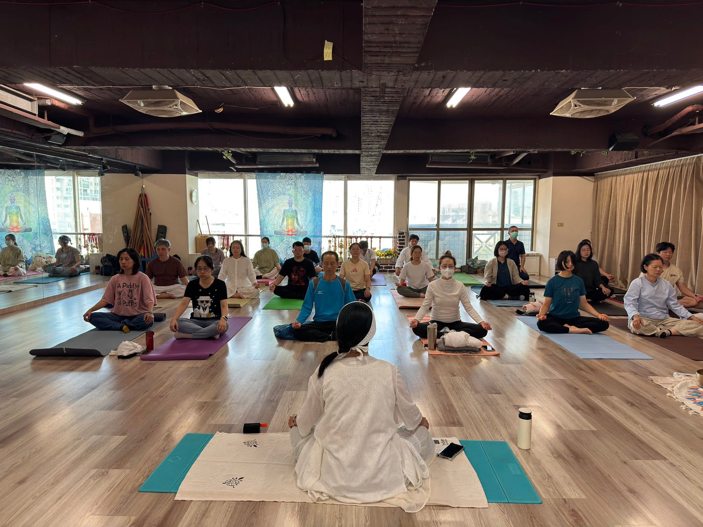
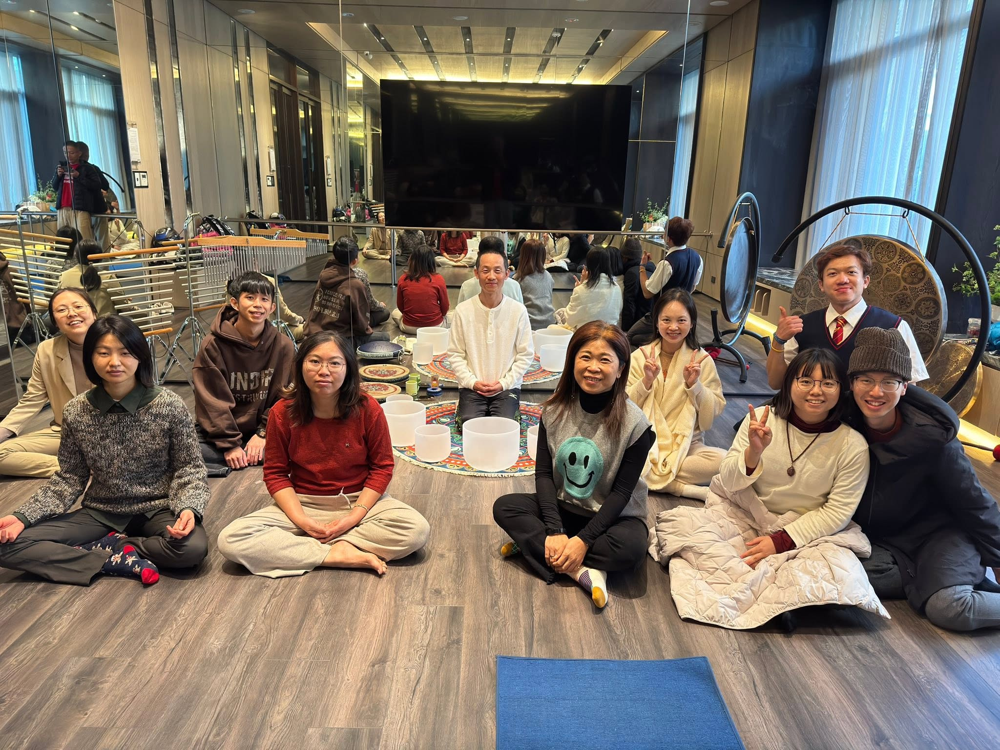
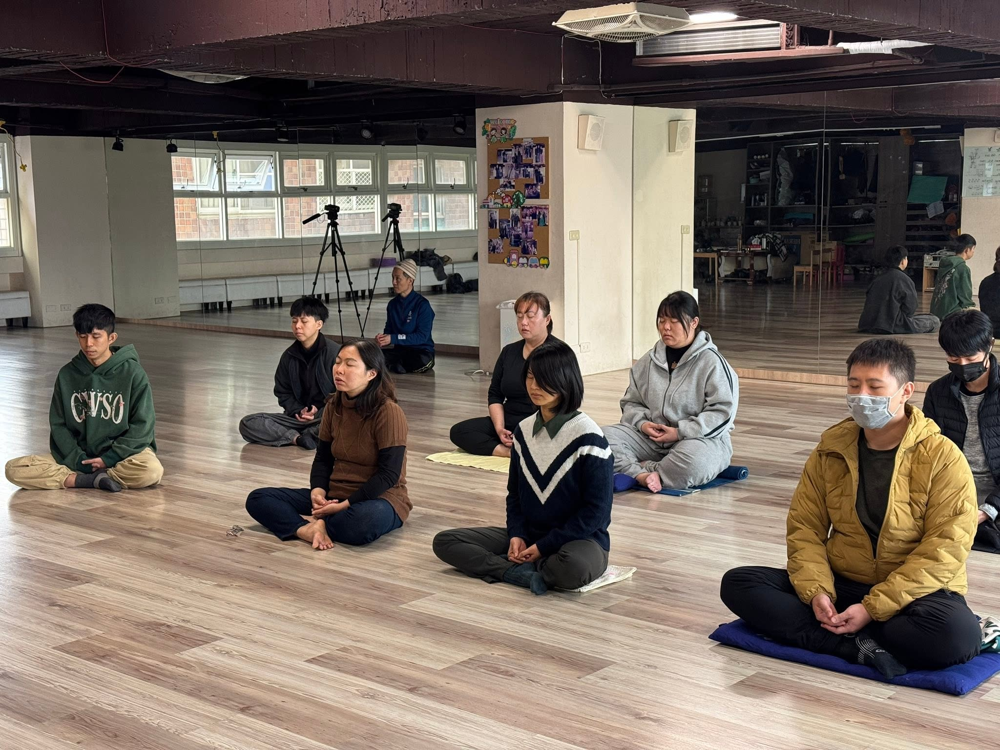
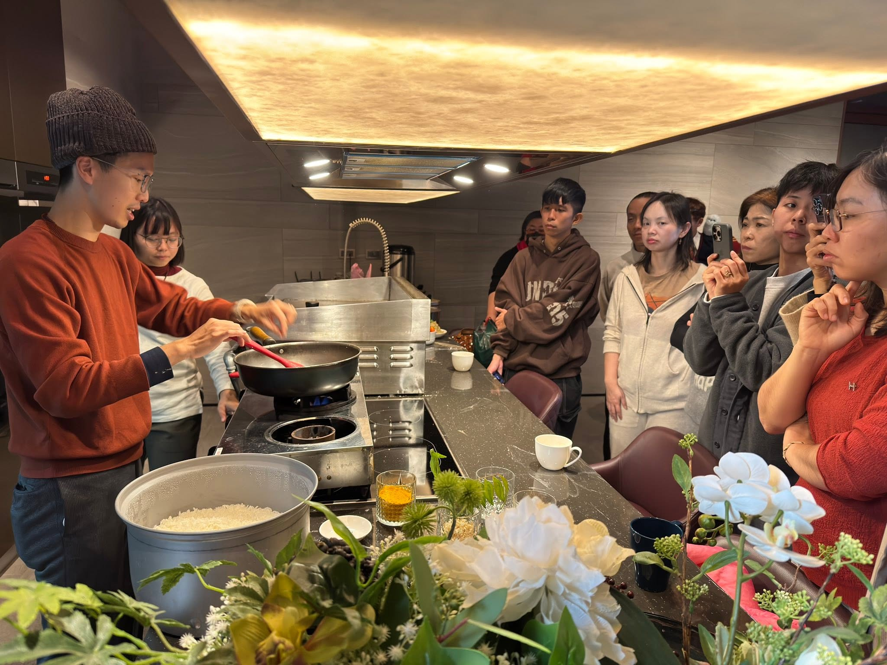

01 — MOVEMENT
瑜伽與身體覺察
留意動作、呼吸與身體感受，練習在自己的節奏裡，找到舒適的空間。

一起練習，
也一起好好生活。
01 / 關於我們
身心合一，從看見此刻的自己開始。
台灣身心合一發展推廣協會是非以營利為目的之公益性社會團體。我們以自我覺察與自我探詢為起點，透過瑜伽、舞蹈、冥想，以及講座、工作坊與讀書會，提供認識自己的不同途徑。
我們關心個人的身心穩定，也期待將這份理解帶進校園、工作場所與人際關係。讓團體之間多一點交流，共同創造共好、共存的可能。
以覺察與放鬆為目的。
本會活動無涉醫療行為，不替代醫療或心理治療。
02 / 一起練習
可以從身體開始，也可以從一個提問開始。
依自己的狀態，探索適合的參與方式。

01 — MOVEMENT
留意動作、呼吸與身體感受，練習在自己的節奏裡，找到舒適的空間。

02 — AWARENESS
觀察當下的念頭與感受，不急著下結論，試著用好奇代替評判。

03 — CONNECTION
透過舞蹈、體驗活動、講座與讀書會，在交流中拓展理解自己的視角。
以上為協會推廣方向；實際開課與參與條件請以各場活動公告為準。
活動相簿
選擇一場活動展開相簿，點選照片即可放大瀏覽。
從社群看見實踐
AI 時代的 7 天自我更新工作坊
從生活中一個「小小卡住的事件」出發，透過工作紙與 AI 輔助整理，看見自己的反應模式，找出可以練習的下一步。
閱讀社團原始公告 此為過往公告回顧，非目前開放報名場次。以章程中的校園推廣任務為方向，討論如何把自我探詢與覺察融入課堂，關心學生的身心穩定與專注。
以協會的組織合作任務為方向，討論如何將覺察與探詢融入教育訓練，關心員工身心發展與團隊連結。
洽詢時可先提供：對象、人數、地點、預計時間與期待。
合作內容、師資及費用需另行討論確認。
04 / 參與之前
讓第一次參與，多一點理解與安心。
可先查看個別活動的適合對象、練習內容與參與條件，再選擇符合自己狀態的場次。不確定是否合適時，請透過社團聯繫活動主辦人，並說明你的疑問。
各場活動的費用、會員優惠與參與資格可能不同，請以該場公告為準。網站不預設所有公益活動皆免費，也不在此收取款項。
不是。依協會章程，活動以自我覺察、自我探詢及輔助放鬆為方向，無涉醫療行為，不替代醫療診斷或心理治療。
歡迎先提出對象、人數、地點、預計時間與期待的主題，再與協會討論安排。網站列出的是可討論的方向，實際內容與師資以雙方確認為準。
不必急著成為誰，先認識此刻的自己。